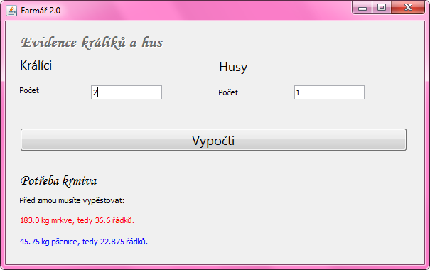
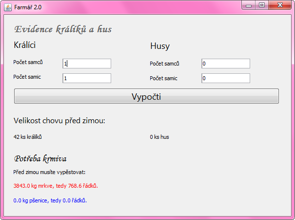

Domácí úkol - Farmářka 2.0
Z poslední lekce máte malou farmu s husami a králíky.
Jako správné farmářky se musíte o chov dobře starat a v létě vypěstovat dostatek potravy pro zvířata na zimu.
V létě zvířata žerou čerstvou travičku, proto potřebujete potravu jen na zimní období,
což (pro zjednodušení) považujme za dobu půl roku.
Update: Půl roku je 365 dní děleno 2, tedy přibližně 183 dní.
Králíci žerou přes zimu mrkev, husy zrní. Jeden králík sní ½ kg mrkve denně a jedna husa ¼ kg zrní. Potřebujete tedy 183*0.5 kg mrkve na každého králíka a 183*0.25 kg zrní na každou husu.
Z jednoho řádku mrkve můžete sklidit 5 kg mrkve. Z jednoho řádku pšenice sklidíte 2 kg. Kolik musíte zasadit řádků mrkve a kolik pšenice, abyste měly dost potravy na zimu?
Až to budete mít hotové, udělejte ještě vylepšenou verzi. Máte-li v chovu alespoň 1 samici a 1 samce, můžete čekat, že se vám chov do zimy rozšíří a měly byste tedy vypěstovat víc potravy. Pokud tedy v aplikaci zadáte, že máte 1 samce králíka a 1 či více samic, musíte počítat s tím, že přes léto bude mít každá samice mláďata 4x. V 1 vrhu může mít 10 mláďat. U hus to bude obdobné, za léto může mít jedna husa 15 housat.
Rady na cestu:
Začněte s předpřipraveným projektem 10-Farmarka-2.0-Zadani.
Pro návrh uživatelského rozhraní vaší aplikace doporučujeme použít JFormDesigner.
Až naprogramujete jednodušší zadání bez rozmnožování chovu, rozšiřte program o zadání počtu samců a samic místo pouze počtu kusů králíků a hus. Ve výpočtech zohledněte jejich množení.
Do velikosti chovu nezapomeňte kromě mláďat připočíst i původní samce a samice. Nezapomeňte také ohlídat, že se chov nemůže rozmnožovat, pokud nemáte samce nebo samici.
V minulých příkladech jsme na výpočty používali typ proměnné Integer.
Tentokrát je potřeba datový typ, který umí udržovat i čísla s desetinným rozvojem.
Integer umí jen celá čísla.
Použijte tedy Double. Pracuje se s ním podobně jako s Integerem.
Tedy převod ze Stringu na Double se provádí pomocí:
String text = ...
Double cislo = new Double(text);
A převod z Double na String se provádí:
Double cislo = ...
String text = cislo.toString();
Pokud budete mít s úkolem jakýkoliv problém, využjte naši facebookovou skupinu, kde vám rádi poradíme. Raději se 10x zeptejte, než abyste to vzdaly.
Materiály k úkolu
Materiály jsou ke stažení zde: ukol1.7z
Archív si stáhněte například na plochu. Celý jej rozbalte přímo do C:\.
Výsledkem bude složka C:\Java-Training\Projects\Lekce03-Ukol.
V ní najdete projekt 10-Farmarka-2.0-Zadani.
Dále je k dispozici demo celého programu
C:\Java-Training\Projects\Lekce03-Ukol\11-Farmarka-2.0-Reseni.
Demo v této složce je možné spustit pomocí Farmarka.bat.